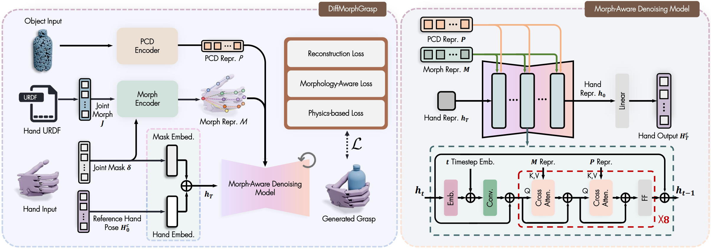

Method Performance


As robots are deployed across diverse environments, manipulation tasks require robot hands with different morphologies to satisfy varying task requirements, hardware capabilities, and cost constraints. However, transferring grasping policies learned on one robot hand to another with a different morphology remains a fundamental challenge due to variations in kinematic structures and degrees of freedom across embodiments. To address these limitations, we propose \textbf{DiffMorphGrasp}, the first diffusion-based framework that incorporates hand morphology information into the generative process for cross-embodiment dexterous grasping. The proposed approach maps grasps from diverse robotic hands into a reference hand pose, providing a common space for learning. Grasp generation is then continuously conditioned on structured representations of hand kinematics, encoded as graphs derived from hand configurations, together with object geometry. In addition, we introduce a loss function that computes joint-level errors over the hand kinematic structure to constrain the generated grasps during training. To evaluate DiffMorphGrasp, we construct a new benchmark for assessing grasp generation performance across robot hands with different morphologies. Extensive experiments demonstrate that DiffMorphGrasp achieves strong zero-shot generalization to unseen hand morphologies, enabling scalable cross-embodiment grasp deployment.



We conduct cross-dataset evaluations on the Multi-GraspLLM and Objaverse datasets to evaluate the zero-shot generalization capability of our model.


We validate DiffMorphGrasp in real-world scenarios using a UR5e arm equipped with a Leap Hand.

Real-world grasping demonstrations on the Leap Hand.